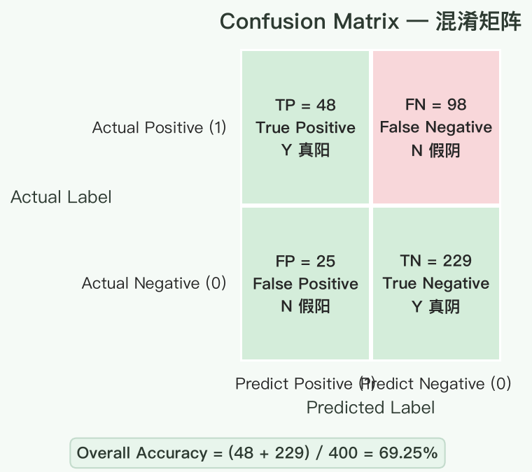
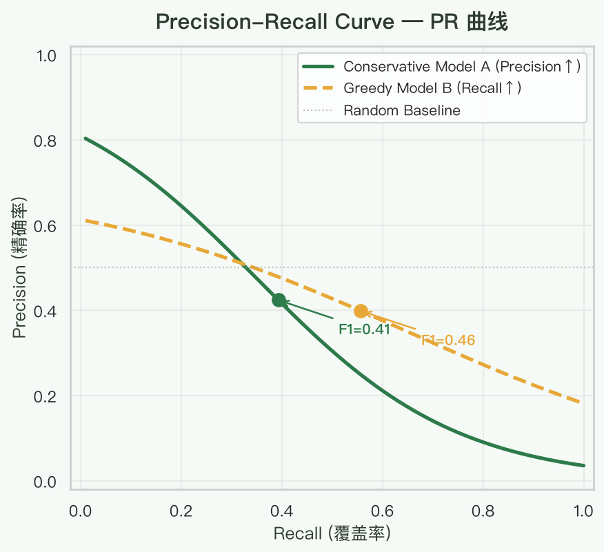
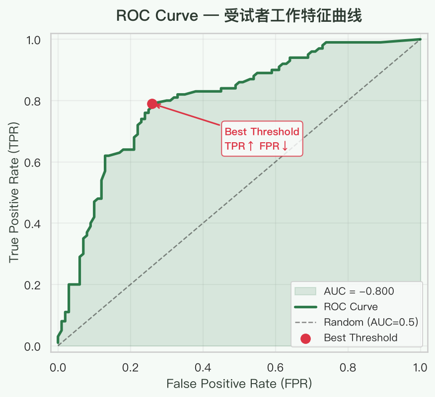
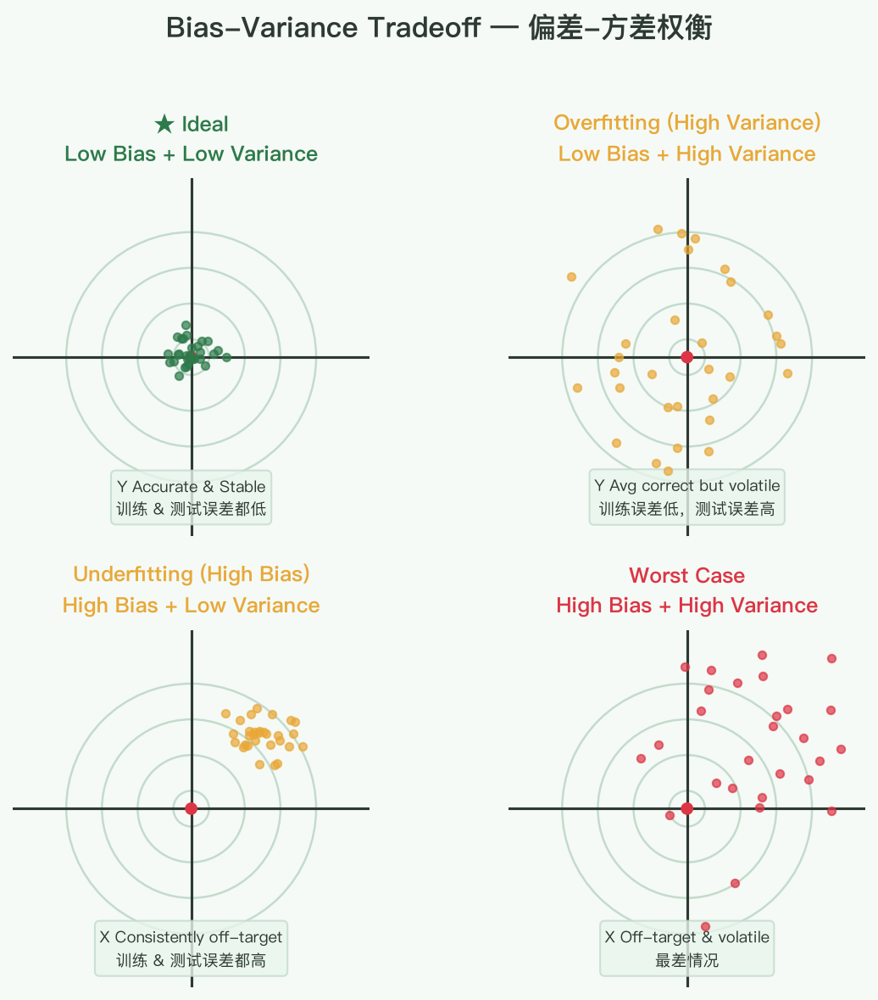
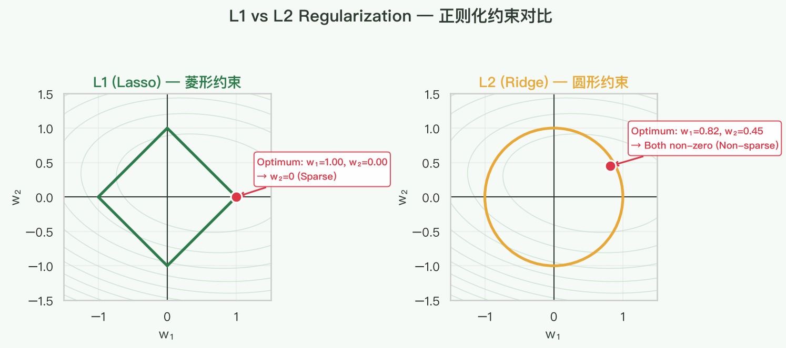
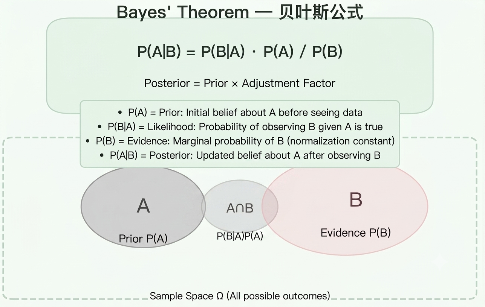
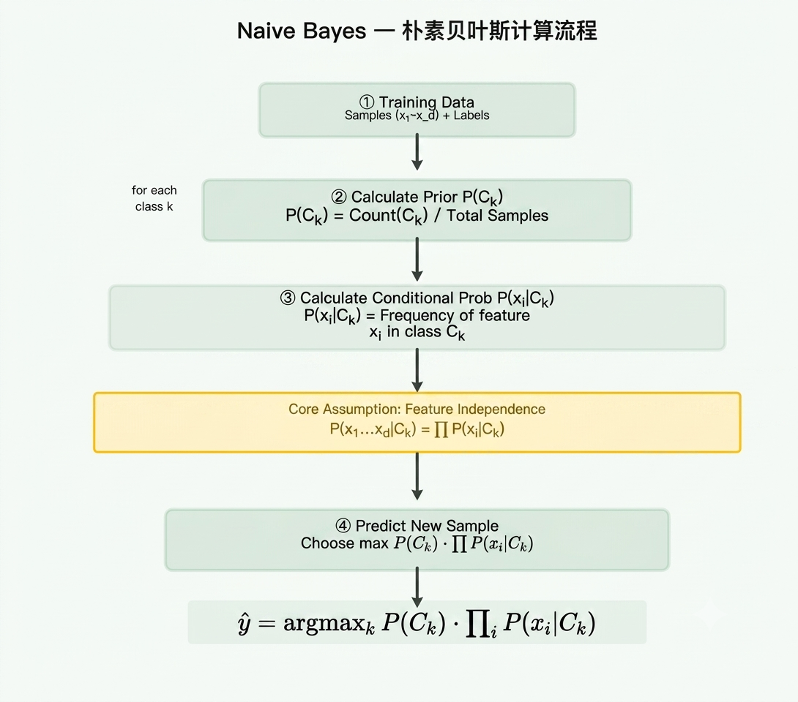

机器学习核心概念速查，覆盖评估指标、模型调优、经典算法、常见问题与应对策略。
最后更新：2026-07-09
| 指标 | 公式 | 说明 | 单位敏感 |
|---|---|---|---|
| MAE | \(\frac{1}{n}\sum_{i=1}^n \|y_i - \hat{y}_i\|\) | 平均绝对误差，直观，对异常值不敏感 | 是 |
| MSE | \(\frac{1}{n}\sum_{i=1}^n (y_i - \hat{y}_i)^2\) | 均方误差，放大较大误差，对异常值敏感 | 是 |
| RMSE | \(\sqrt{MSE}\) | MSE 开根，量纲与原始数据一致 | 是 |
| MAPE | \(\frac{100\%}{n}\sum_{i=1}^n \frac{\|y_i - \hat{y}_i\|}{\|y_i\|}\) | 平均绝对百分比误差，无量纲，便于跨问题比较 | 否 |
| R² | \(1 - \frac{\sum (y_i - \hat{y}_i)^2}{\sum (y_i - \bar{y})^2}\) | 决定系数，模型解释了多少方差，越接近 1 越好 | 否 |
Predict 1 Predict 0
Actual 1 TP (真阳) FN (假阴)
Actual 0 FP (假阳) TN (真阴)

示例数字（手写数字识别，1 为正例）：
Predict 1 Predict 0
Actual 1 48 98
Actual 0 25 229
一般来说，更关注正例的召回率和精确率。
| 指标 | 公式 | 含义 | 示例值 |
|---|---|---|---|
| Accuracy | (TP+TN) / 总数 | 整体正确率 | 69.25% |
| Error Rate | (FP+FN) / 总数 | 整体错误率，= 1 - Accuracy | 30.75% |
| Recall (TPR) | TP / (TP+FN) | 正例被正确找出的比例（覆盖率） | 32.88% |
| Precision | TP / (TP+FP) | 预测为正例中真正是正例的比例（可信度） | 65.75% |
| Specificity (TNR) | TN / (TN+FP) | 负例被正确识别的比例 | 90.16% |
\[ F1 = \frac{2 \cdot Precision \cdot Recall}{Precision + Recall} \]

\[ F_\beta = (1 + \beta^2) \cdot \frac{Precision \cdot Recall}{\beta^2 \cdot Precision + Recall} \]
核心思想： 遍历所有阈值，对每个阈值计算两个指标：
这两个值基于混淆矩阵的行来算，所以不受数据分布（正负例比例）影响。

最佳阈值选择： TPR 高，FPR 低——即左上角 (0,1) 最近的点。
| 特性 | ROC | PR Curve |
|---|---|---|
| 受数据分布影响 | 小（TPR/FPR 分属行列，独立） | 大（Precision 依赖先验分布） |
| 适合场景 | 各类分布比较均衡时 | 正负例高度不平衡时更敏感 |
偏差-方差权衡：
欠拟合 ←———→ 过拟合 High Bias High Variance

| 问题 | 症状 | 解决方向 |
|---|---|---|
| High Bias | 训练误差高 | 增加模型复杂度、更多特征、减少正则化 |
| High Variance | 训练误差低，测试误差高 | 简化模型、更多数据、增加正则化、早停 |
线性回归损失函数加入正则项：
L1 约束的解空间是菱形（与坐标轴相交），最优点容易落在坐标轴上，对应系数为 0。L2 约束的解空间是圆形，难以恰好落在轴上。

| 正则化 | 特点 | 适合场景 |
|---|---|---|
| L1 | 自动特征选择，产生稀疏解 | 高维数据，特征数量 >> 样本量 |
| L2 | 数值稳定，实际效果通常更好 | 大多数通用场景 |
| ElasticNet | L1 + L2 混合 | 特征有关联时效果更好 |
| 方法 | 说明 |
|---|---|
| 1. 收集更多数据 | 最直接的方法，但有时不可行 |
| 2. 下采样（Undersampling） | 减少多数类样本，可能丢失重要信息 |
| 3. SMOTE | 人工合成少数类新样本（在特征空间插值） |
| 4. 加权损失函数 | 对少数类误判给予更高的惩罚权重 |
| 5. 采用不敏感的模型 | 树模型（RF/GBDT）对不平衡相对鲁棒 |
| 6. 集成方法 | Balanced Random Forest, EasyEnsemble 等 |
| 7. 调整阈值 | 根据业务需求调整分类阈值（从默认 0.5 改为更低或更高） |
关键原则：在不平衡场景下，不要只看 Accuracy——关注 Precision、Recall、F1、AUC。
| 策略 | 具体做法 |
|---|---|
| 1. 更多数据 | 数据增强、收集更多真实样本 |
| 2. 简化模型 | 减少层数/神经元/特征 |
| 3. 正则化 | L1/L2 正则化、Dropout（神经网络） |
| 4. 早停 | 划分验证集，验证集性能不再提升时停止训练 |
| 5. 交叉验证 | K-Fold CV 让评估更稳定 |
| 6. 集成学习 | Bagging / Dropout 本身也是一种集成 |
\[ P(A|B) = \frac{P(B|A) \cdot P(A)}{P(B)} \]
直观理解：
\[ \text{后验概率} = \text{先验概率} \times \text{调整因子} \]
调整因子 = \(\frac{P(B|A)}{P(B)}\)，表示新信息 B 对假设 A 的支持程度。

| 方法 | 全称 | 含义 | 公式 |
|---|---|---|---|
| MLE | 最大似然估计 | 找使数据出现概率最大的参数 | \(\arg\max_\theta P(\text{data}|\theta)\) |
| MAP | 最大后验估计 | 结合先验，找后验概率最大的参数 | \(\arg\max_\theta P(\theta|\text{data})\) |
特征条件独立假设： 在给定类别 \(c_k\) 的条件下，各个特征之间相互独立。
\[ P(x_1, x_2, ..., x_d | c_k) = \prod_{i=1}^d P(x_i | c_k) \]

问题背景： 训练集中某个词语 K₁ 在某类别下从未出现过，概率为 0，导致整个乘积为 0。
示例： 3 个类别 C₁/C₂/C₃，1000 个样本中词语 K₁ 出现计数为 0/990/10。不加平滑时概率为 0/0.99/0.01，C₁ 概率永远为 0。
Laplace 平滑（加 1 平滑）：
\[ P(K_1 | C_k) = \frac{\text{count}(K_1, C_k) + 1}{\text{count}(C_k) + |V|} \]
简化示例（假设 \(|V| = 3\)）：
C1 = (0 + 1) / (1000 + 3) ≈ 0.001 C2 = (990 + 1) / (1000 + 3) ≈ 0.988 C3 = (10 + 1) / (1000 + 3) ≈ 0.011
通用形式：
\[ P(x_i | c_k) = \frac{N_{ki} + \alpha}{N_k + \alpha \cdot d} \]
关键理解： 准确性是性能的一部分，性能包括多种衡量指标（F1、AUC、Precision、Recall、Log Loss 等）。
| 场景 | 核心指标 | 原因 |
|---|---|---|
| 医疗诊断 | Recall（灵敏度） | 宁可误报，不可漏诊 |
| 垃圾邮件过滤 | Precision | 宁可漏掉垃圾邮件，也不要误删正常邮件 |
| 搜索引擎 | Precision@K, MAP | 用户只看前几条结果的准确性 |
| 信贷违约预测 | AUC, KS | 需要排序能力，关注整体排序质量 |
| 自动驾驶 | 安全性指标 | 错误代价极大，需极低假阴性率 |
结论： 不要盲目追求 Accuracy，根据业务场景选择合适的指标。
训练集 ↓ 子集1 → 弱分类器1 ┐ 子集2 → 弱分类器2 ─ → 投票/平均 → 最终模型 子集3 → 弱分类器3 ┘ ...并行训练...
原始权重 → 弱分类器1 → 调整权重(错误样本加大权重)
→ 弱分类器2 → 调整权重(错误样本加大权重)
→ 弱分类器3 → ... → 加权组合
| 方法 | 训练方式 | 目标 | 代表算法 | 降低 |
|---|---|---|---|---|
| Bagging | 并行 | 降低方差 | Random Forest | Variance |
| Boosting | 串行 | 降低偏差 | XGBoost, LightGBM | Bias |
| Stacking | 分层 | 结合异质模型优势 | 自定义 | Bias + Variance |
| 问题 | 一句话回答 |
|---|---|
| L1 为什么产生稀疏解？ | L1 约束解空间为菱形，最优点落在坐标轴上 |
| Bagging vs Boosting 区别？ | Bagging 并行降低方差，Boosting 串行降低偏差 |
| ROC 好还是 PR 好？ | 数据均衡用 ROC，不平衡用 PR |
| 类别不平衡怎么处理？ | SMOTE、加权损失、调整阈值、不敏感模型 |
| Bias vs Variance 怎么权衡？ | 高 Bias 欠拟合 → 加复杂度；高 Variance 过拟合 → 加数据/正则/简化 |
| 朴素贝叶斯的假设是什么？ | 特征在给定类别下条件独立 |
| 过拟合怎么解决？ | 更多数据、简化模型、正则化、早停、交叉验证 |